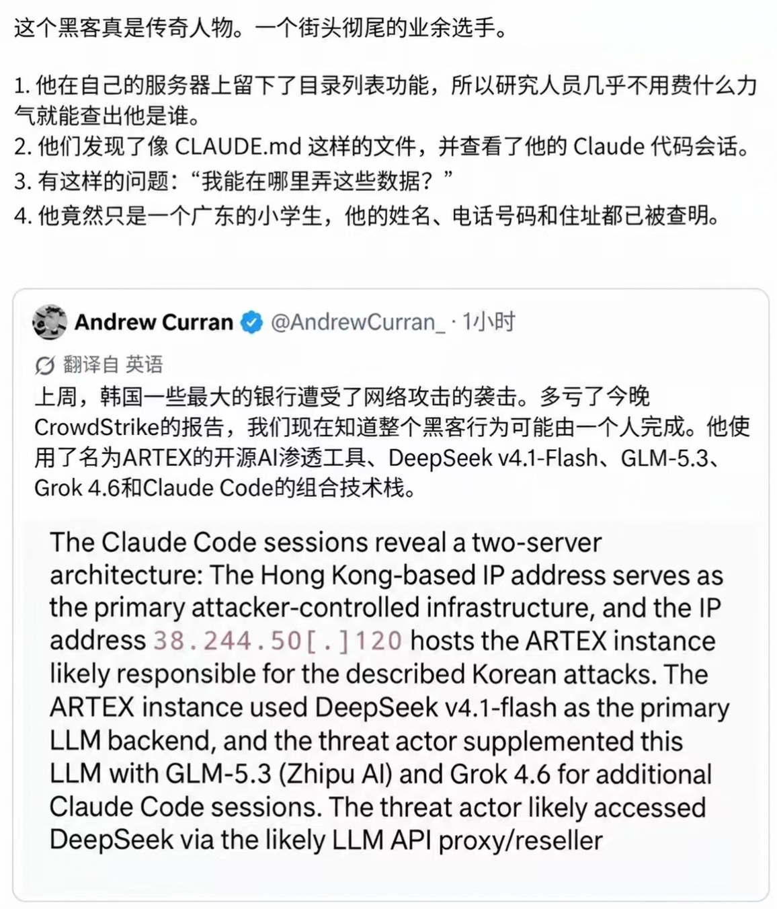
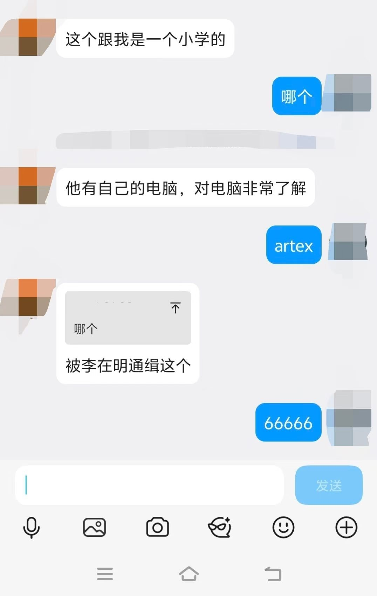
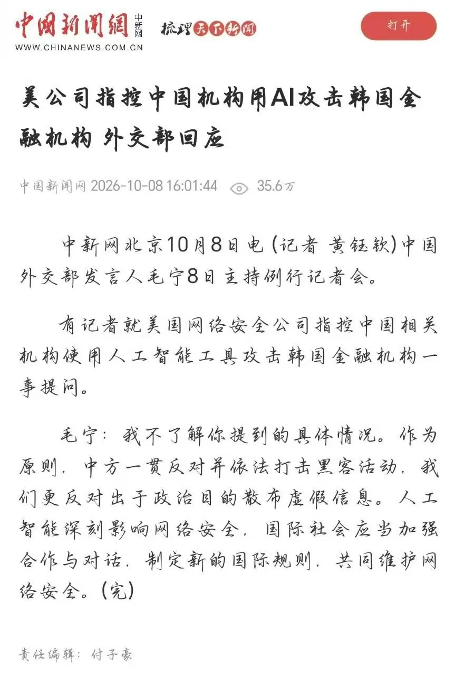

真假侦探大挑战
AI 造出来的图和消息，已经不容易一眼分开。别急着相信！！！
图片判别
两种判法，选其一进入，即时判定，或终局结算
七张图片，判完了
消息判别
流传消息，熟真熟假。
重磅！最新通知：全国小学生课间休息时间将延长到 15 分钟
继“把课间还给孩子”引发全民热议后，记者多方了解到，全国小学生课间休息时间或将迎来大调整。据多名教育系统内部人士透露，一份关于“优化中小学课间管理”的指导性文件正在研究制定中，拟将小学课间休息时间由目前的 10 分钟统一延长至 15 分钟，消息一出，家长群、教师群迅速刷屏。
事实上，课间时间太短的问题并非刚刚被注意到。去年以来，教育部多次强调要保障学生课间休息和体育活动时间。
据记者不完全梳理，目前山东济南、河南郑州已有城区学校在新学期悄悄执行“新作息表”：上午下午各两节 15 分钟课间，并新增“自由活动铃”。有家长晒出的新版课程表显示，课间由原先的“10 分钟”一栏，改成了印着“课间活动 15 分钟”。某省会城市还传出消息，将把课间延长与教师考勤、值日轮岗挂钩，确保“不拖堂、不挤占”。
多位消息人士称，文件如期落地后，将采取“分批推进”方式：先在一二线城市主城区推行，再逐步覆盖县镇学校，预计最快明年春季学期起，覆盖大部分区域。有学校已提前为每个班级划定了“课间活动区”，并采购了一批跳绳、毽子和地面游戏贴纸。至于是否同步调整放学时间、作业量，目前还没有确切说法。
▲ 发言人谈到保障学生课间休息活动时间
消息在网上迅速发酵。有家长表示“早就该这样了，孩子每天回来都说没时间上厕所”，也有家长担忧“课间长了会不会更拖沓、孩子更容易分心”。而大多数小学生则在班级群里欢呼雀跃，有网友调侃“这才是真正的减负从课间做起”。
这条“全国小学生课间休息将延长到 15 分钟”的消息，你相信，并且愿意转发吗？



这条消息，你愿意相信并转发吗？